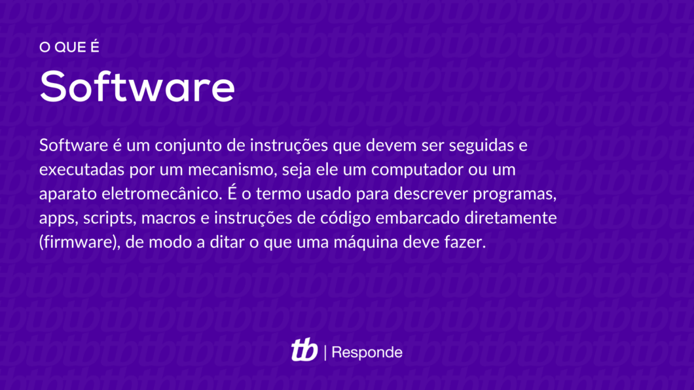

- software de sistema
- software de aplicação
- software de programação
- software de segurança
- software de bases de dados
- software de redes
- software educacional
- software de entretenimento
- software de gestão empresarial
- software de design assistido por computador (CAD)
O que é um software?
Software é um conjunto de instruções que devem ser seguidas e executadas por um mecanismo, seja ele um computador ou um aparato eletromecânico. É o termo usado para descrever programas, apps, scripts, macros e instruções de código embarcado diretamente (firmware), de modo a ditar o que uma máquina deve fazer.
software de sistema
Os softwares de sistema são os responsáveis pelos sistemas operacionais de todos os dispositivos e auxiliam os usuários em seu uso, de forma visual e através de comandos. São extremamente complexos em sua construção.
Windows, Android, iOS.

software de aplicação
O software de aplicação é criado, em regra, para executar tarefas específicas tal como o processamento de texto, reprodução de áudio. Ao contrário do software de sistema, estas tarefas não são indispensáveis ao normal funcionamento do computador e que só são executa- das a pedido do utilizador.
Microsoft Word, Spotify, Calculadora, Instagram, TikTok

software de programação
Softwares de programação são softwares que permitem que programadores criem outros programas, através do uso de linguagens de programação. Eles fornecem ferramentas e soluções para testar, compartilhar, gerenciar e até de facilitar a escrita dos códigos.
Word, Exel, Paint, Bloco de notas, calculadora.

software de segurança
O que é um software de segurança da informação? Trata-se de uma classe de sistemas que age na identificação, na prevenção e no bloqueio de possíveis invasões, a partir dos códigos maliciosos. Ainda assim, existem sistemas para prevenir os ataques ou, até mesmo, para limitá-los.
Gerenciador de senhas, Firewall, Antiphishing, Antispyware

software de bases de dados
O software de banco de dados simplifica o gerenciamento de dados, permitindo que os usuários armazenem dados em um formulário estruturado e depois os acessem.
Microsoft SQL Server, Oracle RDBMS, Microsoft Access

software de redes
Software de rede é um termo extremamente amplo para uma variedade de softwares destinados ao projeto e implementação de redes modernas. Vários tipos de software de rede suportam a criação, calibração e operação de redes.
Windows 2000 Server, Novell Netware, Unix, Linux

software educacional
O software educacional é uma solução completa para instituições de ensino de todos os portes e segmentos. Trata-se de um sistema que oferece controle total sobre as atividades da instituição e de seus colaboradores.
Software educativo de sistema tutorial; Software educativo de exercício e prática; Software educativo de simuladores e jogos e Software educativo de sistema experto.

software de entretenimento
Software de entretenimento é qualquer software que apóie um hobby ou forneça uma forma de diversão. O software de entretenimento inclui videogames, vídeos e qualquer outro software que o usuário considere agradável.
NETFLIX, WIKIPEDIA, KINDLE

software de gestão empresarial
O software de gestão empresarial ocupa uma posição central nas organizações modernas: o painel de controle que concentra todos os dados, documentos e processos do negócio. Com ele, é possível integrar todas as áreas da empresa, automatizar tarefas e acelerar as rotinas diárias, conquistando muito mais eficiência.
ERP, CRM

software de design assistido por computador (CAD)
O Projeto Auxiliado por Computador (CAD) é o uso de programas de computador para criar, modificar, analisar e documentar representações gráficas bidimensionais ou tridimensionais (2D ou 3D) de objetos físicos como alternativa para rascunhos manuais e protótipos de produtos.
AutoCAD, SolidWorks, SketchUp, Revit e Fusion 360

Windows 1.0 (1985)
A primeira versão do SO foi lançada no longínquo ano de 1985 e era mais uma extensão do MS-DOS do que um software completo. Ele se caracterizava pelo modelo colorido na tela e aplicações como bloco de notas e até um Paint. Ele não permitia a sobreposição de janelas, por exemplo, e por isso todas elas ficavam expostas lado a lado.

Windows 2.0 (1987)
O Windows 2.0 chegou ao mercado em dezembro de 1987 e, tanto como o seu predecessor quanto o seu sucessor, usava uma estrutura de computação em 16 bits. Ele apresentou melhorias na interface, como a possibilidade de sobrepor janelas de programas, atalhos de teclado e suporte a VGA.

Windows 3.0 (1990)
Sucessor do Windows 2.0, que trouxe poucas alterações em relação ao primeiro, o 3.0 foi lançado em 1990 com melhorias de memória. Ele também se destacou pelo visual mais limpo, melhor organização de arquivos e apresentou ao mundo o Campo Minado, que viria a ser um destaque nos computadores pré-internet.

Windows 95 (1995)
Considerado um dos sistemas operacionais mais importantes da história, o Windows 95 abriu uma nova era para a Microsoft. Ele foi programado em 32 bits e trouxe melhorias que incluíam o sistema plug and play, recursos de acessibilidade e o navegador Internet Explorer. Lançado em agosto de 1995, o sistema foi o primeiro com o menu Iniciar, que permanece até hoje, e foi o responsável por ajudar o computador a se tornar um item popular nas casas das famílias do mundo todo.

Windows 98 (1998)
O Windows 98 aprofundou a revolução que o seu antecessor começou. Disponibilizado em junho de 1998, ele era mais estável, tinha suporte a mais de um monitor e componentes USB, particionamento do HD, serviço Outlook de e-mail, modo de hibernação e mais. No mundo todo, ele foi o primeiro contato de muita gente com o PC, já que ainda estava em muitas máquinas mesmo após a virada do século.

Windows 2000 (2000)
O Windows 2000 foi lançado em fevereiro de 2000 e consolidou o fim definitivo da nomenclatura "NT". O Windows NT, que começou a ser disponibilizado em 1993, era voltado para usuários corporativos, servidores e workstation, e não para o público geral. Por causa disso, sua menção é importante, além de ter trazido recursos importantes e novos sistemas de segurança.

Windows XP (2001)
O Windows XP foi lançado em outubro de 2001 e à época era bastante inovador, principalmente no quesito visual. Ele apostou em um menu Iniciar verde e barras azuis que se tornaram bastante populares entre os usuários. Entre as várias novidades que ele apresentou em suas versões, havia a opção de alternância de contas de usuários sem fechar arquivos abertos, suporte para DSL e wireless. Ele popularizou programas do Windows Media Player, já que CDs poderiam ser lidos pelos drives e tocados no programa. Seu wallpaper, uma fotografia de planícies na Califórnia, tornou-se uma das imagens mais famosas da era da internet.

Windows Vista (2006)
O Windows Vista teve um hiato bastante grande em relação ao anterior, se desconsiderarmos as atualizações e novas versões do XP. Ele foi lançado em novembro de 2006, apresentando uma nova estética de janelas transparentes e melhores recursos de segurança. Apesar disso, ele não foi tão bem recepcionado porque muitos usuários reclamavam que ele deixava o computador lento, o que fez muita gente continuar usando o XP por mais um bom tempo.

Windows 7 (2009)
Lançado em julho de 2009, o Windows 7 foi recepcionado de maneira um pouco melhor na comparação com o Vista e melhorou tanto o esquema visual quanto o desempenho do sistema operacional. Ele também se destacou por apresentar recursos como suporte a telas touch screen e multi-touch, leitura de Blu-ray, Windows Defender, modo Windows XP e mais.

Windows 8 (2012)
Apesar de também não ter sido muito popular, o Windows 8 trouxe mudanças que podem ser vistas até hoje no software da Microsoft. Ele foi lançado em outubro de 2012 e remodelou por completo a interface do sistema operacional, trazendo um novo sistema de widgets, janelas retangulares e a remoção do clássico menu iniciar, que foi bastante polêmica. Apesar disso, ele começou uma importante integração com os smartphones, que na época já estavam em alta. Ele era compatível com o Windows Phone, o sistema operacional para celulares da Microsoft, e tinha integração com vários apps mobile.

Windows 10 (2015)
O software mais recente da Microsoft foi lançado em julho de 2015. Ele trouxe de volta o menu Iniciar e tem como um dos principais diferenciais o foco multimídia, que pode ser visto na integração com o Xbox, notebooks e tablets. Outra grande novidade que ele apresentou foi a assistente virtual Cortana. De acordo com o site da Net Marketshare, ele é o SO mais utilizado no mundo atualmente, estando em mais de 66% dos computadores ao redor do globo. Logo atrás está o Windows 7, que mesmo mais de dez anos após o seu lançamento ainda está presente em 17% dos PCs.

Windows 11 (2021)
A Microsoft apresentou o futuro do seu produto mais popular. Apesar de ter sido anunciado hoje, ele será lançado no final de 2021 e chegará em uma atualização gratuita para quem tiver a versão anterior. O sistema operacional terá várias novidades, incluindo um visual mais moderno, mais segurança e velocidade, bem como um novo método de organização de janelas. Além disso, pela primeira vez na história, aplicativos Android estarão presentes na Microsoft Store, o que marcará o início de uma nova era de integração entre ecossistemas de apps.

Ubuntu
O Ubuntu é sem dúvida nenhuma, a distribuição linux mais usada e também a que maior influencia devido ao fato de ser uma das distribuições mais amigáveis e mais fáceis de instalar, usar e também de ser a distribuição mais fácil de se instalar programas e de se obter ajuda para resolver problemas.

Mint
O Linux Mint é uma das distribuições Linux preferidas dos usuários iniciantes no Linux e também é considerada um das distribuições mais fáceis de usar. O Linux Mint está em primeiro lugar de acordo com o ranking do Distrowatch(estar em primeiro no ranking do distrowatch não quer dizer que seja a distribuição mais usada) mas é possível que caia um pouco por causa da perda de credibilidade que a distribuição teve após a invasão do site e a troca das ISO’s da distribuição.

Debian
Debian é uma das distribuições mais estáveis e muitas distribuições linux tem o Debian como base. No Debian, cada pacote para por inúmeros testes até ser considerado estável.

Fedora
Apesar de não ser tão fácil de usar quanto as distribuições Ubuntu e Mint, é uma distribuição relativamente fácil de usar mas os iniciantes podem ter um pouco de dificuldade. De qualquer forma é uma ótima distribuição e é patrocinada pela Red Hat.

OpenSuse
Muito usado em servidores, seu gerenciador de pacotes é o Yast.

Red Hat Enterprise Linux
É uma distribuição Linux comercial voltada para empresas e é muito usada em servidores e em datacenters.

CentOS
É construída usando o mesmo código do Red Hat Enterprise Linux mas é gratuita, não possui os logotipos oficiais da Red Hat e também não possui suporte da empresa. Fora isso, o sistema é identico ao Red Hat Enterprise Linux.

Slackware
Criada em 1993 por Patrick Volkerding, Slackware é a mais antiga distribuição Linux ainda em atividade. O Foco dessa distribuição é simplicidade e estabilidade. Seu objetivo é manterse fiel ao padrão UNIX.

Arch Linux
É uma distribuição do tipo rolling release, minimalista e otimizada para processador i686. O seu gerenciador de pacotes é o Pacman. É uma distribuição difícil de ser instalada por usuários iniciantes ou intermediários,

Gentoo
O principal diferencial dessa distribuição é o fato de os seus pacotes não serem pré-compilados, todos os pacotes são compilados para o hardware do sistema, obtendo assim maior velocidade do que seria possível em outras distribuições. É uma distribuição voltada apenas para usuários avançados.

Mageia
Ocupando o lugar que seria da Mandriva, Mageia é uma distribuição Linux francesa criada por ex colaboradores da Mandriva que criaram uma Organização sem fins lucrativos após uma série de demissões que ocorreram antes da falência da empresa.

Backtrack / Kali Linux
O Kali é a distribuição mais usada entre as distribuições Linux voltadas para testes de penetração e para analisar a segurança de sistemas e redes de computadores.